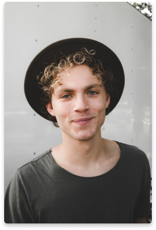
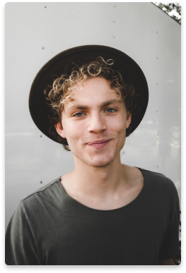

Personal Type:
Name:
Age:
Location:
Technical Comfort:
Profession:
Sibling
Lorenzo
22
Miami, Florida
Technical Savvy
Musician

Personal Type:
Name:
Age:
Location:
Technical Comfort:
Profession:
Sibling
Lorenzo
22
Miami, Florida
Technical Savvy
Musician
“I love plants and having a green space at home, they often inspire me when I’m feeling stuck when composing new songs.”
-Lorenzo
- Create music inspired by nature and emotions.
- Balance technology and creativity.
- Promote green spaces in urban settings.
- Build emotional connections through his music.
- Grew up in Miami, Florida, in a creative family.
- Passion for music started early, experimenting with instruments as a child.
- Love for plants came from his grandmother’s orchid collection.
- Combines his music composition with his love for nature by surrounding himself with plants in his home studio.
- Music style is calm and nature-inspired, reflecting his surroundings.
- Studio filled with plants and advanced music equipment.
- Self-sustaining plant setups for travel.
- Outdoor music collaborations in natural environments.
- Touring in cities with abundant green spaces.
- Creative blocks, especially under deadlines.
- Feels disconnected from nature when traveling.
- Music software can disrupt his creative flow.
- Struggles to maintain plants while on tour.